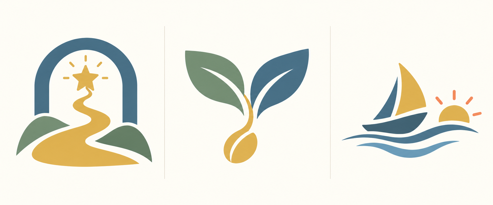

كل خطوة تصنع فرصة
رحلة صغيرة.
أحلام كبيرة.
اجتمعوا حول الطاولة. ابنوا دخلاً مستمراً، واتخذوا قرارات تقرّبكم من أحلامكم.
استكشاف تفاعلي للتصميم • الأرصدة والنتائج أمثلة عرض، ولا تتصل بمباراتك المحفوظة.
الهوية / ثلاث وجهات
أي رحلة تشبه درب الثراء؟
اختر اتجاهاً لمعاينته في البداية وشريط اللعب وأيقونة التطبيق. الاختيار هنا معاينة فقط.
الاسم عربي حقيقي، خارج الصور المولدة. صيغ كتابية متجهية أولية مشتقة من Tajawal؛ تحتاج تنقيحاً واعتماداً بشرياً قبل الشعار النهائي.
لوحة استكشاف بصري مولّدة — ليست شعاراً نهائياً

من حول الطاولة؟
كل لاعب، حكاية.
شخصيات متنوعة. فرصة لكل واحد منكم.
المشاركون
النموذج يتيح اختيار ٢ أو ٨ لتجربة الحالتين؛ اللعبة النهائية تستوعب كل الأعداد بينهما.
وقتكم، وطريقتكم
جلسة تناسب الجميع.
كل الأنظمة متاحة في النمطين. الإرشاد وسرعة العرض هما ما يتغير.
هذه أهداف اختبار وليست مدة مضمونة؛ مدة ٥–٨ لاعبين تُقاس مستقلة، خصوصاً مع نهاية الأحلام.
قبل أول خطوة
جاهزون للرحلة؟
هذه جلسة عرض؛ لا تنفذ قواعد اللعب أو الوقت الفعلي.
حول الطاولة
اتفاق الجلسة
التجارة، المزادات، الشراكات، الجمعية وبقية الأنظمة متاحة في النمطين.
التسوية والترتيب وفق النظام الحالي في التنفيذ. نتيجة النموذج توضيحية وليست حساباً لتلك التسوية.
- استعد
- ارمِ
- تحرك
- قرر
- النتيجة
كل قرار، خطوة تعلم
انتهت الجلسة.
والحلم أقرب.
معاينة نهاية المباراة.
ترتيب توضيحي
- ١مريم٢٥ نقطة حلم
- ٢محسن١٠ نقاط حلم
أرقام ثابتة لشرح العرض؛ النتيجة النهائية يجب أن تستخدم تسوية اللعبة الحالية وأسباب ترتيبها الفعلية.
ما الذي تعلمناه؟
الاحتفاظ بسيولة للفرصة التالية قرار مهم أيضاً.